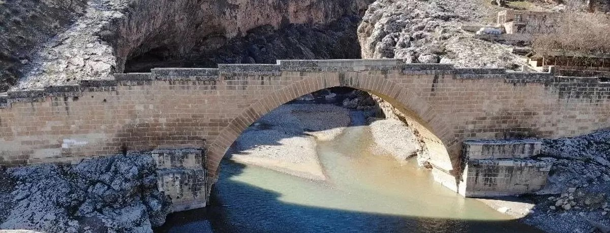

Adıyaman’da Gezilecek Yerler

Nemrut Dağı
Kommagene Krallığı'nın anıtsal mezar kompleksi, dev tanrı heykelleri ve eşsiz gün doğumu manzarası.
Detayları Gör

Cendere Köprüsü
Roma dönemine uzanan tarihi taş köprü. Mühendislik harikası kemerli yapısıyla ünlüdür.
Detayları Gör